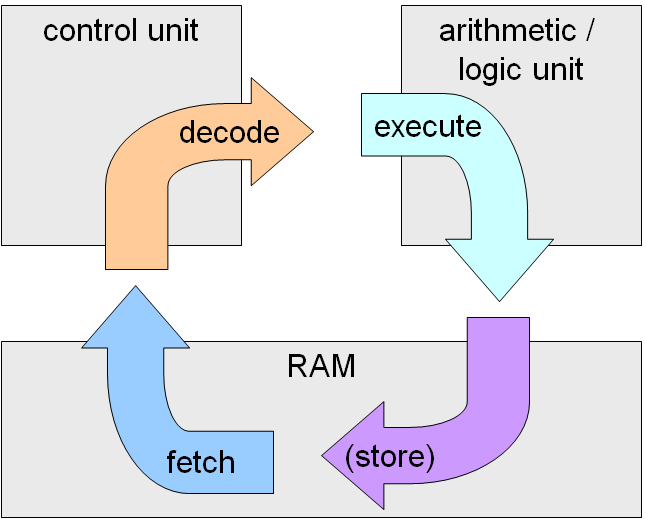

Processor is a computer's brain, executing software instructions.
There are 4 main components in CPU:
3 main stages: Fetch instructions from memory, decode them, and execte operation with storing results in registers
Processor speeds are measured in gigahertz (GHz) with modern CPUs operating at speed near 5GHz.
Hertz is a clock cycle per second, meaning that 1GHz equals 1 billion cycles.
CPUs with multicores use 2+ cores(cpu) on a single chip, which enhances it's performance. Common variants are dual-core(2), quad-core(4), and up to hexadeca-core(16).
Cache is a fast memory for data that is going to be used by CPU.
There are 3 levels of cache:
There is also a LLC, last level cache, that is chared between all cores for data acess. The memory controller manages all data transfers between CPUs.
Pipelining is a technique when multiple instructions can be processed at the same time, which saves time and improves performace.
CPU generates heat due to multiple processes running a the same time, and this factor requires cooling. There are several methods for cooling: air cooling, liquid cooling, passive cooling (heat sinks).
GPU is a specialized processor designed for work with graphics and paralle computations. Today they are used for renderin and work with AI.
Integrated GPUs are built into CPU. They are cheaper but less effective. Discrete ones, on the other hand, are separate, offer more performance but mur expensive.